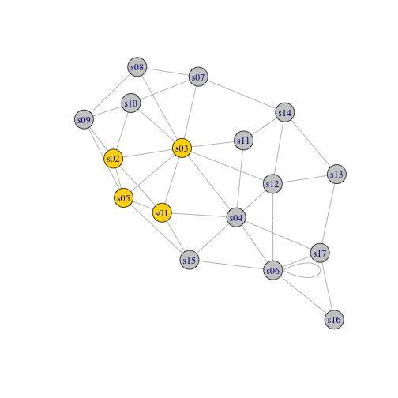
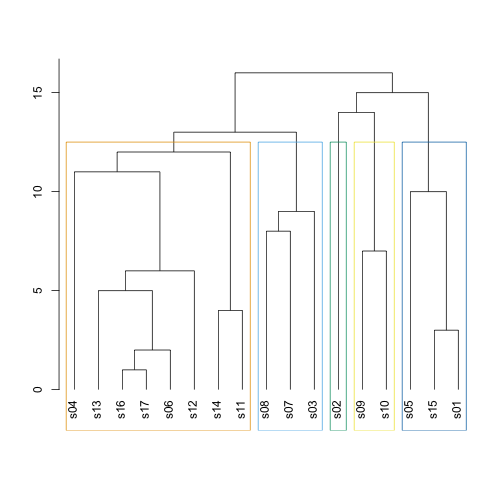
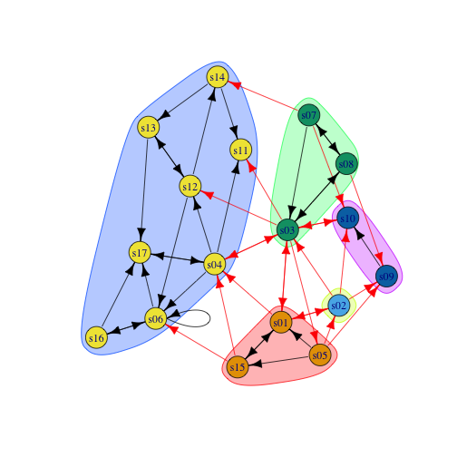
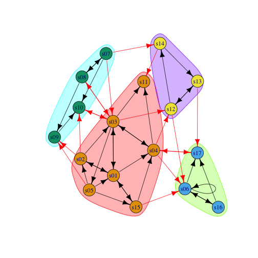
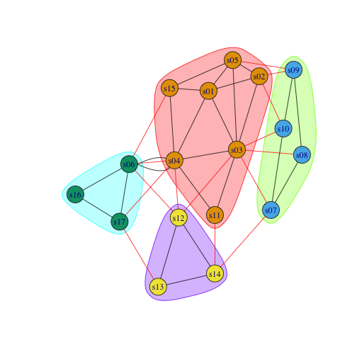
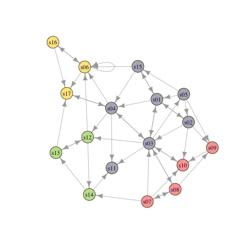

xwMOOC 기계학습
네트워크 커뮤니티 탐지
1. 하위집단과 커뮤니티
네트워크 분석에서 하위집단, 커뮤니티 식별은 관심이 가는 흥미로운 주제중 하나다. 하위집단, 커뮤니티 탐지 분석작업을 위해서 먼저 방향성 없는 그래프로 변환이 필요한데 3가지 방법이 있다.
mode="collapse"방법을 통해 방향성 없는 엣지를 생성.mode="each"방법을 통해 멀티플렉스 그래프의 경우 방향성 없는 엣지를 생성mode="mutual"방법을 통해 대칭 링크로 방향성 없는 엣지를 생성.
##================================================================================
## 01. 하위집단과 커뮤니티
##================================================================================
suppressWarnings(suppressMessages(library(igraph)))
suppressWarnings(suppressMessages(library(readr)))
suppressWarnings(suppressMessages(library(dplyr)))
nodes <- read_csv("https://raw.githubusercontent.com/kateto/R-Network-Visualization-Workshop/master/Data/Dataset1-Media-Example-NODES.csv", col_names = TRUE)Parsed with column specification:
cols(
id = col_character(),
media = col_character(),
media.type = col_integer(),
type.label = col_character(),
audience.size = col_integer()
)
links <- read_csv("https://raw.githubusercontent.com/kateto/R-Network-Visualization-Workshop/master/Data/Dataset1-Media-Example-EDGES.csv", col_names = TRUE)Parsed with column specification:
cols(
from = col_character(),
to = col_character(),
weight = col_integer(),
type = col_character()
)
links <- aggregate(links[,3], links[,-3], sum)
links <- links[order(links$from, links$to),]
colnames(links)[4] <- "weight"
rownames(links) <- NULL
net <- graph.data.frame(links, nodes, directed=T)
#---------------------------------------------------------------------------------
# 01. 사전 정지작업: 방향성 없는 그래프로 변환
#---------------------------------------------------------------------------------
net.sym <- as.undirected(net, mode= "collapse", edge.attr.comb=list(weight="sum", "ignore"))2. 클리크
클리크(cliques)를 통해 방향성 없는 그래프 전체가 연결된 하위집단을 식별한다.
#---------------------------------------------------------------------------------
# 02. 클리크(Cliques)
#---------------------------------------------------------------------------------
cliques(net.sym) %>% tail # 클리크 목록[[1]]
+ 3/17 vertices, named:
[1] s04 s06 s12
[[2]]
+ 3/17 vertices, named:
[1] s04 s06 s15
[[3]]
+ 3/17 vertices, named:
[1] s04 s06 s17
[[4]]
+ 3/17 vertices, named:
[1] s06 s16 s17
[[5]]
+ 3/17 vertices, named:
[1] s12 s13 s14
[[6]]
+ 4/17 vertices, named:
[1] s01 s02 s03 s05
sapply(cliques(net.sym), length) # 클리크 길이 [1] 1 1 1 1 1 1 1 1 1 1 1 1 1 1 1 1 1 2 2 2 2 2 2 2 2 2 2 2 2 2 2 2 2 2 2
[36] 2 2 2 2 2 2 2 2 2 2 2 2 2 2 2 2 2 2 2 2 3 3 3 3 3 3 3 3 3 3 3 3 3 3 3
[71] 3 3 3 3 4
largest_cliques(net.sym) # 최대 클리크[[1]]
+ 4/17 vertices, named:
[1] s03 s01 s02 s05
# 시각화
vcol <- rep("grey80", vcount(net.sym))
vcol[unlist(largest_cliques(net.sym))] <- "gold"
plot(as.undirected(net.sym), vertex.label=V(net.sym)$name, vertex.color=vcol)
3. 커뮤니티 탐지
다양한 알고리즘이 커뮤니티 탐지를 위해 개발되었다. 커뮤니티 사이는 링크연결이 최소화되고, 커뮤니티 내에는 연결이 조밀하게 많아야 된다.
- Newman-Girvan
- 라벨 전파(Propagating labels)
- Greedy optimization of modularity
- K-core 분해
#---------------------------------------------------------------------------------
# 03. 커뮤니티 탐지
#---------------------------------------------------------------------------------
# 1. Newman-Girvan
ceb <- cluster_edge_betweenness(net)
dendPlot(ceb, mode="hclust")
# 시각화
plot(ceb, net)
# igraph 객체 살펴보기
class(ceb)[1] "communities"
length(ceb) [1] 5
modularity(ceb)[1] 0.292751
crossing(ceb, net) s01|s02 s01|s03 s01|s04 s01|s15 s02|s01 s02|s03 s02|s09 s02|s10 s03|s01
TRUE TRUE TRUE FALSE TRUE TRUE TRUE TRUE TRUE
s03|s04 s03|s05 s03|s08 s03|s10 s03|s11 s03|s12 s04|s03 s04|s06 s04|s11
TRUE TRUE FALSE TRUE TRUE TRUE TRUE FALSE FALSE
s04|s12 s04|s17 s05|s01 s05|s02 s05|s09 s05|s15 s06|s06 s06|s16 s06|s17
FALSE FALSE FALSE TRUE TRUE FALSE FALSE FALSE FALSE
s07|s03 s07|s08 s07|s10 s07|s14 s08|s03 s08|s07 s08|s09 s09|s10 s10|s03
FALSE FALSE TRUE TRUE FALSE FALSE TRUE FALSE TRUE
s12|s06 s12|s13 s12|s14 s13|s12 s13|s17 s14|s11 s14|s13 s15|s01 s15|s04
FALSE FALSE FALSE FALSE FALSE FALSE FALSE FALSE TRUE
s15|s06 s16|s06 s16|s17 s17|s04
TRUE FALSE FALSE FALSE
# 2. Propagating labels
clp <- cluster_label_prop(net)
plot(clp, net)
# 3. Greedy optimization of modularity
cfg <- igraph::cluster_fast_greedy(as.undirected(net))
plot(cfg, as.undirected(net))
V(net)$community <- cfg$membership
colrs <- adjustcolor( c("gray50", "tomato", "gold", "yellowgreen"), alpha=.6)
plot(net, vertex.color=colrs[V(net)$community])
# 4. K-core 분해
kc <- coreness(net, mode="all")
plot(net, vertex.size=kc*6, vertex.label=kc, vertex.color=colrs[kc])